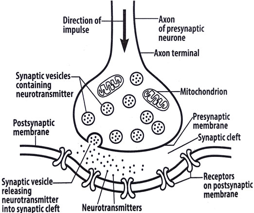

By the end of this lesson, you should be able to:

Diagram of a synapse
A synapse is the junction between two or more neurons that allows communication between them. Communication occurs through the release of chemicals called neurotransmitters from the presynaptic neuron into the synpatic cleft. Binding of the neurotransmitter to specific receptors on the postsynaptic neuron, depolarizes its membrane and generates an action potential. Acetylcholinesterase breaks down acetylcholine after stimulating the postsynaptic neuron, preventing continuous stimulation of the postsynaptic neuron.
1. What is a synapse?
2. Describe the process of impulse transmission across a synapse.
3. Explain the role of cholinesterase in nerve impulse transmission across a synapse.
4. Explain why nerve impulse transmission across a synapse is unidirectional.